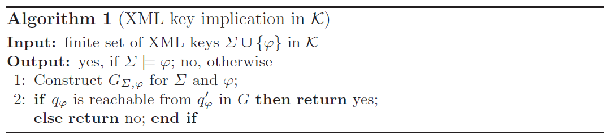
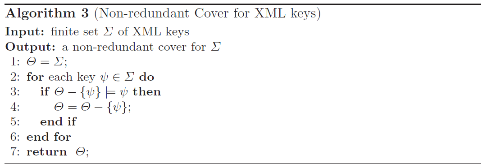
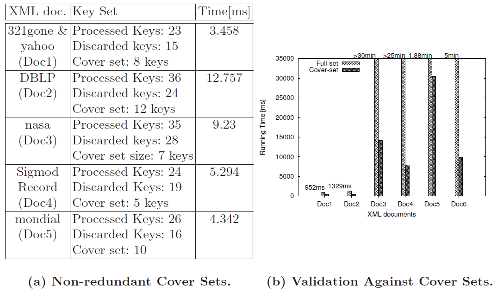

Performance Analysis of Algorithms to Reason about XML Keys.Flavio Ferrarotti1 Sven Hartmann2 Sebastian Link3 Mauricio Marin4 Emir Muñoz4,5* |
|
1 Victoria University of Wellington |
Abstract: Keys are fundamental for database management, independently of the particular data model used. In particular, several notions of XML keys have been proposed over the last decade, and their expressiveness and computational properties have been analyzed in theory. In practice, however, expressive notions of XML keys with good reasoning capabilities have been widely ignored. In this paper we present an efficient implementation of an algorithm that decides the implication problem for a tractable class of XML keys. We also evaluate the performance of the proposed algorithm, demonstrating that reasoning about expressive notions of XML keys can be done efficiently in practice and scales well. Our work indicates that XML keys as those studied here have great potential for diverse areas such as schema design, query optimization, storage and updates, data exchange and integration. To exemplify this potential, we use the algorithm to calculate non-redundant covers for sets of XML keys, and show that these covers can significantly reduce the number of XML keys against which XML documents must be validated. This can result in enormous time savings.
The increasing popularity of XML [1] for persistent data storage and data processing has triggered the demand for efficient algorithms for managing XML data. Both industry and academia have long since recognized the importance of keys in XML data management. Over the last decade, several notions of XML keys have been proposed and discussed in the database community (see [2] for a brief overview). The most influential proposal is due to Buneman et al. [3, 4] who defined keys on the basis of an XML tree model similar to the one suggested by DOM [5] and XPath [6]. While Buneman et al. studied keys as a concept orthogonal to schema specification (such as DTD or XSD), their proposal has been adopted by the W3C for the XML Schema standard [7] subject to some minor, though essential modifications (see [8] for a discussion). Today, all major XML-enabled DBMS, XML parsers and editors (such as XMLSpy) support keys.
Example 1. Figure 1 shows an XML tree, in which nodes are annotated by their type: E for element nodes, A for attribute nodes, and S for text nodes.
For the data represented in Figure 1 we have the following keys: (a) A project node is identified by pname, no matter where the project node appears in the document. (b) A team node can be identified by tname relatively to a project node. (c) Within any given subtree rooted at team, an employee node is identified by name. The first key is an example of an absolute key since it must hold globally throughout the entire tree. The last two are examples of relative keys since they hold locally within some subtrees. Note that a given team of employees can work on several projects and thus a team node cannot be identified in the entire tree by its tname. However, it holds locally within each subtree rooted at a project node. Similarly, a given employee can work on different teams and thus cannot be identified in the entire tree by its name.
For relational data, keys have been widely used to improve the performance of many perennial tasks in database management, ranging from consistency checking to query answering. The hope is that keys will turn out to be equally beneficial for XML. One of the most fundamental questions on keys is that of logical implication, that is, deciding if a new key holds given a set of known keys. Among other things, this is important for minimizing the cost of validating that an XML document satisfies a set of keys gathered as business rules during requirements engineering.
Example 2. Suppose, the database designer has already specified the keys (a), (b) and (c). Now she considers a further key (d) which expresses that a project node can be identified by its child nodes pname and team. By key (a) one already knows that a project node can also be identified by just its pname. It is easy to see that (a) actually implies (d), in the sense that every XML tree that satisfies (a) also satisfies (d). Thus, checking whether an XML tree T satisfies (a) is equivalent to checking whether T satisfies (a) and (d). We like to emphasize that project nodes have complex content. Thus, checking whether two project nodes in T violate (d) is quite costly in terms of time, since it involves testing whether the subtrees rooted at their team nodes are isomorphic to one another with the identity on string values. In contrast, checking whether two project nodes violate (a) only involves checking equality on text of their respective pname attribute nodes.
Example 3. No less important, the implication of XML keys is of interest for semantically rich data exchange. Suppose, the company wants to share part of their project data with a business partner. For that they generate a view over the XML tree T but skip the lname nodes for the sake of privacy. Thus, key (c) is no longer meaningful. To provide the business partner with relevant semantic information it should be checked whether the specified keys allow one to conclude a further key stating that an employee node is identified by their surviving descendant nodes fname and role within any given team subtree.
The definition of keys adopted by the W3C for XML Schema [7] is currently the industry standard for specifying keys. However, Arenas et al. [8] have shown the computational intractability of the associated consistency problem, i.e., the question whether there exists an XML document that conforms to a given XSD and satisfies the specified keys. A further issue pointed out by Buneman et al. [3] is the fact that XML Schema restricts value equality to string-valued data items. But there are cases in which keys are not so restricted (see Section 7.1 of [3] for discussion). In particular, keys (c) and (d) in our examples utilize a less restricted notion of equality, since they require to test equality between name nodes and team nodes, respectively, none of which are string-valued. On the other hand, the expressiveness and computational properties of XML keys with good reasoning capabilities have been deeply studied from a theoretical perspective [3, 4, 9, 10, 11]. In practice, however, expressive yet tractable notions of XML keys have been ignored so far.
Aiming to fill this gap between theory and practice, we initiate in this work an empirical study of an expressive XML key fragment, namely the fragment of XML keys with nonempty sets of simple key paths. As shown in [4, 9], automated reasoning about this XML key fragment can be done efficiently, in theoretical terms. Our work confirms this fact in practice. Incidentally, note that all the examples of XML keys described above belong to this fragment.
In this paper, we describe an efficient implementation of an algorithm that decides the implication problem for an expressive fragment of XML keys and thoroughly evaluate its performance. Our performance tests give first empirical evidence that reasoning about expressive notions of XML keys is practically efficient and scales well. Our work indicates that XML keys have great potential for database management tasks similar to their counterparts for relational data.
Within our algorithm we exploit non-redundant covers for sets of XML keys. A set Σ of keys is non-redundant if there is no proper subset Σ′ of Σ such that the set of all keys implied by Σ′ coincides with the set of all keys implied by Σ. Thus, considering such covers has the potential to reduce significantly the number of keys against which an XML document must be validated. This can result in enormous time savings. Our experiments show that the time to compute a cover for a given set of keys is just a small fraction of the average time needed to validate an XML document against a single key. Surprisingly, even though several algorithms that validate XML documents against sets of certain XML keys have been proposed and tested with promising results (see e.g. [12, 13, 14]), none of them makes use of the reasoning capabilities of XML keys as proposed in our work.
The paper is organized as follows. We recall basic notions in Section 2, including the central notion of XML key which is used through this work. In Section 3, we present the algorithm for deciding XML key implication, and describe an implementation thereof in Section 4. In Section 5, we discuss how this implementation can be reused to speed up the validation of XML documents against sets of XML keys. Section 6 summarizes experimental results obtained from applying our implementations to publicly available XML data, including DBLP, the SIGMOD Record, and the Mondial database. We conclude the paper in Section 7 with final remarks.
We use the common representation of XML data as ordered, node-labelled trees. Thus, an XML tree is a 6-tuple T=(V,lab,ele,att,val,r) where V is a set of nodes, and lab is a mapping V→L = E∪A∪{S} assigning a label to every node in V. A node v∈ V is an element node if lab(v)∈E, an attribute node if lab(v)∈A, and a text node if lab(v)=S. Here E∪A∪{S} form a partition of L. Moreover, ele and att are partial mappings defining the edge relation of T: for any node v∈ V, if v is an element node, then ele(v) is a list of element and text nodes in V and att(v) is a set of attribute nodes in V. The partial mapping val assigns a string to each attribute and text node. Finally, r is the unique and distinguished root node. The XML keys studied in this work are defined using the path language PL consisting of expressions given by the following grammar: Q → ℓ | ε | Q.Q | _*. Here ℓ ∈ L is any label, ε denotes the empty path expression, “.” denotes the concatenation of two path expressions, and “_*” denotes the variable length “don’t care” wildcard. Let Q be a word from PL. A path v1, …, vn in an XML tree T is called a Q-path if lab(v1). ⋯ .lab(vn) can be obtained from Q by replacing variable length wildcards in Q by words from PL. For a node v∈ V, v[[Q]] denotes the set of nodes in T that are reachable from v following any Q-path. We use [[Q]] as an abbreviation for r[[Q]] where r is the root node of T. We denote as PLs the subset of PL expressions containing all words over the alphabet L, i.e., we do not allow wildcards in PLs expressions. Q ∈ PL is valid if it does not have labels ℓ∈A or ℓ=S in a position other than the last one. We define formally the concept of XML key following [4]. For that, we need the concept value equality. Two nodes u,v∈ V are value equal, denoted by u=vv, iff the subtrees rooted at u and v are isomorphic by an isomorphism that is the identity on string values. As an example, the third and fifth employee-nodes are not value equal while their respective child nodes labeled as name are.
Definition 1. An XML key ϕ in the class K is an expression of the form (Qϕ,(Qϕ′,{P1ϕ,…,Pkϕϕ})) where kϕ≥ 1, Qϕ and Qϕ′ are PL expressions, and for all i=1,…,kϕ, Piϕ is a PLs expressions such that Qϕ.Qϕ′.Piϕ is a valid PL expression. An XML tree T satisfies the key (Q,(Q′,{P1,…,Pk})) if and only if for every node q∈ [[Q]] and all nodes q1′,q2′∈ q[[Q′]] such that there are nodes xi∈ q1′[[Qi]], yi∈ q2′[[Pi]] with xi=vyi for all i=1,…,k, then q1′=q2′. Therefore, Qϕ is called the context path, Qϕ′ is called the target path, and P1ϕ,…,Pkϕϕ are called the key paths of ϕ.
In particular, the four keys described informally in the introduction, belong to this class and can be expressed formally as follows: (a) (ε, (project, {pname})); (b) (project, (team {tname})); (c) (_*.team, (employee,{name})); (d) (ε, (project, {pname,team})).
Let Σ∪{ϕ} be a finite set of XML keys in a class C. We say that Σ implies ϕ, denoted by Σ⊨ϕ, if and only if every finite XML tree T that satisfies all σ∈Σ also satisfies ϕ. The implication problem for C is to decide, given any finite set Σ∪{ϕ} of keys in C, whether Σ⊨ϕ.
A finite axiomatization for the implication of keys in the class
of XML keys with nonempty sets of simple key paths K, was established
in [9].
The completeness proof of this axiomatization is based on a characterization
of key implication in terms of the reachability problem for fixed nodes in a
suitable digraph. This characterization,
together with the efficient evaluation
of Core XPath [15],
resulted in a compact
algorithm to decide XML key implication in time quadratic in the size of
the input key. This algorithm, which is described next, forms the basis for our
implementation. We need the following technical concepts.
Mini-trees and Witness Graphs.
Let Σ∪{ϕ} be a finite set of keys in
K. Let
LΣ,ϕ denote the set of all labels ℓ∈L
that occur in path expressions of keys in Σ∪{ϕ}, and fix a
label ℓ0∈E−LΣ,ϕ. Let
Oϕ and Oϕ′ be the PLs expressions obtained from the
PL expressions Qϕ and Qϕ′, respectively, by
replacing each wildcard “_*” by ℓ0.
Let p be an Oϕ-path from a node rϕ to a node qϕ,
let p′ be an Oϕ′-path from a node rϕ′ to
a node qϕ′ and, for each i=1,…,kϕ, let pi be
a Piϕ-path from a node riϕ to a node xiϕ, such
that the paths p,p′,p1,…,pkϕ are mutually
node-disjoint. From the paths p,p′,p1,…,pkϕ we obtain
the mini-tree TΣ,ϕ by identifying the node
rϕ′ with qϕ, and by identifying each of the nodes
riϕ with qϕ′.
The marking of the mini-tree
TΣ,ϕ is a subset M of the node set of
TΣ,ϕ: if for all i=1,…,kϕ we have
Piϕ≠ε, then M consists of the leaves of
TΣ,ϕ, and otherwise M consists of all descendant
nodes of qϕ′ in TΣ,ϕ.
Example 4.
Let Σ = {σ1, σ2} where σ1 and σ2 are the
XML keys (ε,(public._*, {project.pname.S, project.year.S})) and
(public,(_*.project,{pname.S,
year.S})), respectively. Let
ϕ = (ε, (public._*.project,
{pname.S, year.S})).
The construction of the mini-tree TΣ,ϕ is schematized in
Figure 2(a) .
The mini-trees are used in the algorithm as a base to calculate the impact of a key in Σ on a possible counter-example tree for the implication of ϕ by Σ. To distinguish keys that have an impact from those that do not, the following notion of applicability is needed. Let TΣ,ϕ be the mini-tree of the key ϕ with respect to Σ, and let M be its marking. A key σ is said to be applicable to ϕ if and only if there are nodes wσ∈[[Qσ]] and wσ′∈ wσ[[Qσ′]] in TΣ,ϕ such that wσ′[[Piσ]]∩M≠∅ for all i=1,…,kσ. We say that wσ and wσ′ witness the applicability of σ to ϕ.
We define the witness graph GΣ,ϕ as the node-labeled
digraph obtained from TΣ,ϕ by inserting additional edges: for
each key σ∈Σ that is applicable to ϕ and for each pair
of nodes wσ∈ [[Qσ]] and wσ′∈
wσ[[Qσ′]] that witness the applicability of σ to
ϕ, GΣ,ϕ contains the directed edge
(wσ′,wσ) from wσ′ to wσ.
Example 5.
Let Σ and ϕ be as in
Example 3. Both keys in Σ are applicable to ϕ.
The witness graph GΣ,ϕ is shown in
Figure 2(b) . It contains a witness edge from
national to db that arises from σ1 and a witness edge
from project to public that arises from σ2.
The algorithm. Algorithm 1 decides XML key
implication. Its correctness is an immediate consequence of
Theorem 1.
Theorem 1.
([9]) Let Σ ∪ {ϕ} be a finite set of keys in
the class K. We have Σ ⊨ ϕ if and
only if qϕ is reachable from qϕ′ in
GΣ,ϕ.

In this section we discuss our implementation of Algorithm 3 and analyze its theoretical complexity. The implementation was developed in C++ using gcc version 4.4.3 from the GNU compiler collection.
Data Structures. We need data structures suitable to represent mini-trees and witness-graphs. The obvious candidates are adjacency matrices and adjacency lists [16]. Since the algorithm does not require frequent determination of edge existence, we choose the latter in order to minimize the memory requirements. In our implementation, a mini-tree TΣ,ϕ is represented by using a list L of length n=|V| where V is the vertex set of TΣ,ϕ. Each element ei ∈ L is represented by an object of type vertexEle that has a pointer to the adjacency list of the i-th vertex vi in some fixed enumeration of the vertices in V, a pointer to the data component of the vertex vi, and a pointer to the next element ei+1 in the list. In turn, the data component of a vertex vi is represented by an object of type nodeEle, and an element in the adjacency list of a vertex vi is represented by an object of type edgeEle. An object of type nodeEle has an id component that uniquely identifies vi, a label component with the label of vi, a flag visited, and a type component with the type E (element), A (attribute) or S (PCDATA) of vi. An object of type edgeEle has a pointer to an object of type vertexEle and a pointer to the next object of type edgeEle in the adjacency list. Witness graphs are represented likewise. Figure 2(b) shows a witness graph and Figure 2(c) a corresponding representation using adjacency lists.
The Implementation. We implemented Step 1 of Algorithm 1, using the following strategy:
Substep (i) involves constructing the mini-tree TΣ,ϕ using the data structures defined at the beginning of this section. Note that we can find a label ℓ0 that is not among the labels used in the XML keys in Σ ∪ {ϕ} in time ∑σi ∈ Σ |σi| + |ϕ|, where |σi| and |ϕ| denote the sum of the lengths of all path expressions in σi and ϕ, respectively. Once we have got a suitable label, ℓ0, TΣ, ϕ can be built in time O(|ϕ|), since the mini-tree TΣ,ϕ has only |ϕ|+1 nodes. Regarding Substep (ii), if Piϕ≠ ε we can determine the marking of the mini-tree TΣ,ϕ by simply traversing the list L marking the nodes whose adjacency list is empty. Note that those nodes correspond to leaves in TΣ,ϕ. Otherwise, we mark all nodes in the adjacency list of the element ei in L that represents qϕ′, and recursively mark all descendants of those nodes. This step takes O(|ϕ|) time.
In principle, Substep (iii) requires, for each σ ∈ Σ, to evaluate wσ′[[Piσ]] for i=1,…,kσ, for all wσ′∈ wσ[[Qσ′]] and all wσ∈ [[Qσ]]. However, we do not need to determine all witness edges (w′,w) to decide whether qϕ is reachable from qϕ′ in the witness graph GΣ,ϕ. Let Wσ′ be the set of all nodes w′ in TΣ,ϕ for which there exists some node w in TΣ,ϕ such that w and w′ witness the applicability of σ to ϕ. Further, for each w′∈ Wσ′, let Wσ(w′) be the set of all nodes w in TΣ,ϕ such that w and w′ witness the applicability of σ to ϕ. The witness edges are just the pairs (w′,w) with w′∈ Wσ′ and w∈ Wσ(w′). As shown in [9], it is not necessary to determine the entire set Wσ(w′) for each w′∈ Wσ. We can actually restrict ourselves to the top-most ancestor of qϕ′ in TΣ,ϕ that belongs to Wσ(w′), which we denote by wσtop(w′) (if it exists).
So, we need first to determine Wσ′, and then, for each w′∈ Wσ′, we need to determine wσtop(w′) (if it exists). By definition, Wσ′ consists of all nodes w′∈[[Qσ.Qσ′]] in TΣ,ϕ such that, for each i=1,…,kσ, there is a marked node in w′[[Piσ]]. Since a query of the form v[[Q]] is a Core XPath query and can be evaluated on a node-labelled tree T in O(|T|×|Q|) time, it follows that [[Qσ.Qσ′]] can be evaluated in TΣ,ϕ in O(|ϕ|×|Qσ.Qσ′|) time. Next, fix some i∈{1,…,kσ}. Let v be a marked node, and let u denote the ancestor of v that resides |Piσ| levels atop of v in TΣ,ϕ (if it exists). We can then check whether v∈ u[[Piσ]], that is, whether the unique path from u to v is a Piσ-path. This can be done in O(min{|Piσ|,|ϕ|}) time, since Piσ is a PLs expression. By inspecting all nodes v∈M, we obtain the set Uiσ of all nodes u in TΣ,ϕ for which u[[Piσ]]∩M≠∅. Overall, this takes O(|M|×|Piσ|}) time. Since Wσ′ is the intersection of [[Qσ.Qσ′]] with the sets Uiσ, i=1,…,kσ, we get that Wσ′ can be determined in O(|ϕ|×|σ|) time. Regarding wσtop(w′), note that if Qσ′ is a PLs expression, then wσtop(w′) is the node |Qσ′| levels atop of w′ in TΣ,ϕ. Otherwise Qσ′ contains a _*, and thus has the form A._*.B where A is a PLs expression and B is a PL expression. In this case, as shown in [9], wσtop(w′) is the top-most ancestor w of qϕ′ in TΣ,ϕ that belongs to [[Qσ]] and for which w[[A]] is non-empty. In particular, wσtop(w′) is independent from the choice of w′ in Wσ′. Thus, we propose Algorithm 2 to determine wσtop(w′) for a given node w′.
Fast algorithms for the validation of XML documents against keys are crucial to ensure the consistency and semantic correctness of data stored in databases or exchanged between applications [18]. In this section we explain how our implementation of the implication algorithm for XML keys can be used to compute non-redundant cover sets of XML keys, which in turn can be used to significantly speed up the process of XML document validation against sets of XML keys. This is, up to our knowledge, the first time that the reasoning capabilities of XML keys are used in this context.
Cover Sets for XML Keys.
We define the concept of cover set of XML keys following the notion given in [19, 20] for functional dependencies in the relational model.
Definition 2.
Let Σ* denote the set of all XML keys implied by a given set Σ.
Two sets Σ1 and Σ2 of XML keys are equivalent,
denoted by Σ1 ≡ Σ2,
if Σ1* = Σ2*. If Σ1 and
Σ2 are equivalent we call them a cover of one another. This
means that Σ1 and Σ2 imply exactly the same XML keys.
For all cover Σ2 of Σ1, if an XML tree TD satisfies Σ2 (TD ⊨ Σ2), then TD ⊨ Σ1 too. If Σ1 ≡ Σ2, then for each XML key ψ in Σ1*, Σ2 ⊨ ψ, because Σ2* = Σ1*. In particular, Σ2 ⊨ ψ for each key ψ in Σ1.
Definition 3.
A set Σ2 of XML keys is non-redundant if it is not equivalent
to any of its proper subsets. Σ2 is a non-redundant cover for a
set Σ1 of XML keys if Σ2 is non-redundant and a cover for
Σ1.
An important property is that a non-redundant cover set has in most cases fewer keys that the original one (in the extreme case both sets are equal). This can result in enormous time saving when validating an XML document against a set of XML keys, as we will show in the experimental results.
A characterization of non-redundancy is that Σ is non-redundant if
there is no key ψ in Σ such that Σ − {ψ} ⊨ ψ.
A key ψ ∈ Σ is called redundant if Σ − {ψ} ⊨
ψ. Thus, we propose Algorithm 5 to compute, given
a set Σ of XML keys, a non-redundant cover Θ of Σ.

It is important to note that a set Σ can have more than one
non-redundant cover set and there can exist non-redundant cover sets that are
not included in Σ.
The complexity of Algorithm 5 is determined by the complexity of the implication algorithm which is executed once for every key in Σ. Thus a non-redundant cover set for a set Σ of XML keys in K can be computed in O(|Σ| × (max{|ψ|:ψ ∈ Σ})2) time.
In the following we present a performance analysis of the algorithms proposed in this work. Up to our knowledge, this is the first time that the theory on automated reasoning about XML keys is tested in practice. The running time results were obtained in an Intel Core 2 Duo 2.0 GHz machine, 3GB RAM, and Linux kernel 2.6.32.
The Data Set. We used a collection of large XML documents from [21]. The collection consists of the following XML documents. A characterization of the documents is shown in Table 1.
Table 1: XML Documents.
Doc ID Document Doc1 321gone.xml Doc2 yahoo.xml Doc3 dblp.xml Doc4 nasa.xml Doc5 SigmodRecord.xml Doc6 mondial-3.0.xml
We defined, for each document in the collection, a corresponding set of 5 to 10 appropriate (in the context of the document) XML keys. Then, in order to test the scalability of the implication algorithm, we generated large sets of XML keys in the following two systematic ways. Firstly, using the manually defined sets of XML keys as seeds, we computed new implied keys by successively applying the inference rules from the axiomatization of XML keys presented in [9]. For instance, by applying the interaction rule to (listing, (auction_info, {high_bidder. bidder_name.S, high_bidder.bidder_rating. S})) and (listing.auction_info, (high _bidder, {bidder_name.S, bidder_rating.S} )), we derived the implied key (listing, (auction_info.high_bidder, {bidder_name. S, bidder_rating.S})). Each key generated by this method was added to the original set. We applied the interaction, context-target, subnodes, context-path containment, target-path containment, subnodes-epsilon and prefix-epsilon rules whenever possible, since those are the rules which can produce implied keys with corresponding non trivial witness graphs (see the proof of Lemma 3.6 in [9]). Secondly, we defined some non-implied (by the keys defined previously) XML keys. We did that by taking non-implied XML keys ϕ, building their corresponding mini-trees TΣ, ϕ, adding several witness edges to it while keeping qϕ not reachable from q′ϕ, and finally defining new non-implied XML keys corresponding to those witness edges. As an example, let us take the mini-tree in Figure 3 which corresponds to the key ϕ = (conference, (issue._*.articles.article.author, {first.S, last.S})). From the witness edges (a), (b) and (c), we obtained the keys, (conf- erence.issue, (_*, { articles.article.author.first.S})), (conference.issue._*, (ar- ticles.article, {au− thor.first.S})) and (conference.issue._*.articles, (article. author {first.S})), respectively.
This process gave us a robust collection of XML keys to thoroughly test the performance of the implication algorithm.
Deciding Implication of XML Keys: Tests Results. The results regarding running times for deciding the implication of XML keys are shown in Figures 4(a) and 4(b). In both figures, the x-axis corresponds to the number of keys in Σ, and the y-axis corresponds to the average running time required to decide whether Σ implies a given key ϕ. More precisely, let time(Σ, ϕ) be the running time required to decide Σ ⊨ ϕ and let Φ be a set of XML keys such that Σ ∩ Φ = ∅, the running time shown in Figures 4(a) and 4(b), corresponds to (∑ϕi ∈ Φ time(Σ, ϕi))/|Φ|. In our experiments the sets Φ were composed of 20 fixed XML keys each. We tested the scalability of the algorithm by adding, in each iteration, 5 new XML key to the corresponding Σ sets. The actual XML keys included in all these sets were created using the strategy explained above.
We consider Σ sets composed by (i) only absolute keys (“abs”), (ii) only relative keys (“rel”) or (iii) both types of keys (“mix”). Given that an input key ϕ can be either absolute or relative, we have a total of six test cases. The results obtained in these experiments are summarized in Figure 4(a). For a small set Σ with about 5 XML keys, the execution takes 0.2ms in average, whereas for a large set of about 100 XML keys, the execution takes 1.7ms in average. This indicates that our implementation of the implication algorithm is practically efficient and scales well regardless of the type of XML keys considered.
Note that the resulting running time is slightly lower when ϕ is an absolute key and Σ is composed by either absolute or relative keys. This is mainly due to the fact that Qϕ = ε, which means that the construction of the mini-tree involves less steps and that the qϕ node corresponds to the root node, making it unnecessary to perform a search for such node. On the other hand, the performance shown by the “abs-rel” curve in Figure 4(a) is slightly degraded due to the fact that, in general, the algorithm needs to traverse more nodes to determine whether qϕ is reachable from q′ϕ. This is consistent with the way in which the witness graphs are defined.
To isolate the effect of wildcards in the performance of the algorithm, we duplicated the number of wildcards in the keys of the test case “mix-rel”, replacing some of the labels in the context and target paths of those keys by the variable length wildcard. Figure 4(b) shows the running times for the original set of keys (curve “mix-rel”) and the set with increased number of wildcards (curve “wildcard”). The results show that the presence of wildcards in the path expressions increases the running time for the test sets with large number of keys, but such increase is not significant in practice.
Document Validation: Tests Results. We use the same data set as before. The aim is to determine the viability of computing non-redundant cover sets to speed up the validation of XML documents against XML keys. By validating an XML document against a set of XML key, we refer to the task of checking, for every XML key in the set, whether the document satisfies such key.
To validates XML keys, we use a naive algorithm that parses the XML document into a DOM tree and then evaluates the XML keys on the resulting tree, by using XPath queries to express their context, target and key paths. We do need to use sophisticated validation algorithms such as [12, 13, 14], since the proposed optimization based in cover sets is independent of the particular algorithm used for XML key validation.
The results (in milliseconds (ms)) obtained from the computation of non-redundant cover sets is summarized in Figure 5 (a). We emphasize that the behavior of the Algorithm 5 is linear in practice. For example, for a set of 146 keys, calculating a non-redundant cover set takes around 155ms. A total of 102 keys are discarded reducing the set to 44 keys.

Figure 5: Non-redundant Cover Sets of XML keys and Validation of XML Documents
Figure 5 (b) shows the optimization achieved by pre-calculating non-redundant cover sets during the validation process of the documents in Table 1. The results indicate that the running time required to compute a non-redundant cover set is just a tiny fraction of the overall running time required to validate a single XML document against a key. Note that in most cases the validation time can be significantly reduced by pre-computing the non-redundant covers. This can be clearly observed in the case of the DBLP document (’Doc3’) and Nasa document (’Doc4’). In these cases the running time of the validation against the original set of XML keys is approximately 63 times greater than the running time of the validation against its non-redundant cover-set.
Our research was motivated by two objectives. Firstly, we wanted to demonstrate that there are expressive classes of XML keys that are not only tractable in theory but can be reasoned about efficiently in practice. For that we studied a fragment of XML keys as originally introduced by Buneman et al. [3, 4], namely the class K of XML keys with nonempty set of simple key paths. For these keys it was known that their implication problem can be decided in quadratic time in theory [9]. Here we have presented an efficient implementation thereof, and our experiments show that it also runs fast in practice and scales well.
Secondly, we wanted to show that our observations on the problem of deciding implication is not only of interest for the problem itself but has immediate consequences for other perennial tasks in XML database management. As an example we study the problem of validating an XML document against a set of XML keys. We have presented an optimization method for this validation that computes a non-redundant cover for the set of XML keys given as input so that satisfaction only needs to be checked for the keys in this cover. This can reduce the number of keys significantly, and our experiments show that enormous time savings can be achieved in practice. This holds true even though the validation procedure is able to decide value equality among element nodes with complex content as this is required for the XML keys studied here (and distinguishes them from the keys defined in XML Schema). This illustrates the advantage of having efficient reasoning capabilities at hand for integrity constraints.
We would like to emphasize that the use of non-redundant covers does not depend on the particular choice of the XML fragment but can be tailored to any class of XML keys for which the implication problem can be solved efficiently. We plan to extend out studies to other expressive classes of XML keys and related constraints. In a first step we will consider keys that allow single label wildcards in their path expressions as studied from a theoretical perspective in [11].
This document was translated from LATEX by HEVEA.